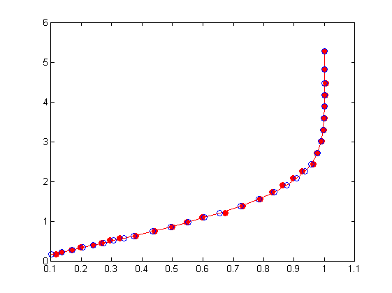
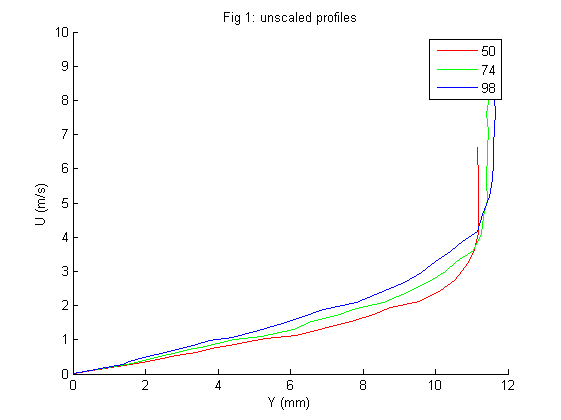
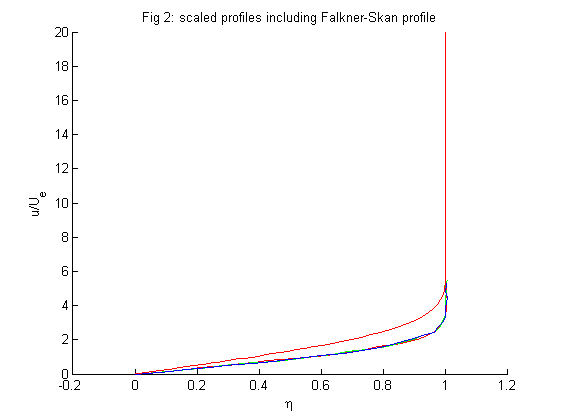
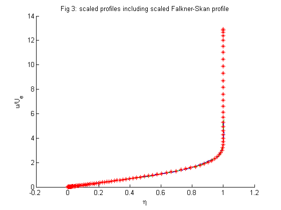

Contents
clear all;
clc;
nu = 1.6151E-5;
[Y50, Uy50] = read_lab_data_JF3('FPG_G01_X50');
[Y74, Uy74] = read_lab_data_JF3('FPG_G01_X74');
[Y98, Uy98] = read_lab_data_JF3('FPG_G01_X98');
Y50 = Y50(3:end); Uy50 = Uy50(4:end);
Y74 = Y74(3:end); Uy74 = Uy74(4:end);
Y98 = Y98(3:end); Uy98 = Uy98(4:end);
[Ywall50, ny50] = FPG_LAB_JF_P1(Y50, Uy50);
[Ywall74, ny74] = FPG_LAB_JF_P1(Y74, Uy74);
[Ywall98, ny98] = FPG_LAB_JF_P1(Y98, Uy98);
Ue50 = .5*(Uy50(end)+Uy50(end-1));
Ue74 = .5*(Uy74(end)+Uy74(end-1));
Ue98 = .5*(Uy98(end)+Uy98(end-1));
Y50 = [0; Y50-Ywall50]; Uy50 = [0; Uy50];
Y74 = [0; Y74-Ywall74]; Uy74 = [0; Uy74];
Y98 = [0; Y98-Ywall98]; Uy98 = [0; Uy98];
Uy50int = 1-Uy50/Ue50; deltaS50 = trapz(Y50, Uy50int);
Uy74int = 1-Uy74/Ue74; deltaS74 = trapz(Y74, Uy74int);
Uy98int = 1-Uy98/Ue98; deltaS98 = trapz(Y98, Uy98int);
Uy50thetaint = (Uy50/Ue50).*(1-Uy50/Ue50); theta50 = trapz(Y50, Uy50thetaint);
Uy74thetaint = (Uy74/Ue74).*(1-Uy74/Ue74); theta74 = trapz(Y74, Uy74thetaint);
Uy98thetaint = (Uy98/Ue98).*(1-Uy98/Ue98); theta98 = trapz(Y98, Uy98thetaint);
H50 = deltaS50/theta50;
H74 = deltaS74/theta74;
H98 = deltaS98/theta98;
H = (H50 + H74 + H98) / 3;
n=(ny50 + ny74 + ny98)/3;
[f, fp, fpp, fppp, eta] = FS_solver_JF(n);
[f50, fp50, fpp50, fppp50, eta50] = FS_solver_JF(ny50);
[f74, fp74, fpp74, fppp74, eta74] = FS_solver_JF(ny74);
[f98, fp98, fpp98, fppp98, eta98] = FS_solver_JF(ny98);
b50 = trapz(eta50, (1-fp50));
b74 = trapz(eta74, (1-fp74));
b98 = trapz(eta98, (1-fp98));
b = trapz(eta, (1-fp));
par =
0.0140 -0.1329
par =
0.0469 -0.1030
par =
0.0498 -0.0771

h = figure(1);
clf
hold on
title('Fig 1: unscaled profiles');
xlabel('Y (mm)');
ylabel('U (m/s)');
plot(Uy50, Y50, 'r')
plot(Uy74, Y74, 'g')
plot(Uy98, Y98, 'b')
legend('50','74','98')
saveas(h, 'figure_1', 'jpg');
h = figure(2);
clf
hold on
title('Fig 2: scaled profiles including Falkner-Skan profile');
xlabel('\eta');
ylabel('u/U_e');
plot(Uy50/Ue50, Y50/deltaS50, 'r')
plot(Uy74/Ue74, Y74/deltaS74, 'g')
plot(Uy98/Ue98, Y98/deltaS98, 'b')
plot(fp, eta, 'r')
saveas(h, 'figure_2', 'jpg');
h = figure(3);
clf
hold on
title('Fig 3: scaled profiles including scaled Falkner-Skan profile');
xlabel('\eta');
ylabel('u/U_e');
plot(Uy50/Ue50, Y50/deltaS50, 'r')
plot(Uy74/Ue74, Y74/deltaS74, 'g')
plot(Uy98/Ue98, Y98/deltaS98, 'b')
plot(fp, eta/b, 'r*')
saveas(h, 'figure_3', 'jpg');
  
EXERCISE 2
rho = 1.1823;
rho_meth = 776;
g = 9.82;
beta = deg2rad(20);
[X,h] = read_lab_data_JF3('PressureHeight');
delta_h = h(1:end-1) - h(end);
delta_p = rho_meth * g * delta_h * sin(beta);
U_inf = sqrt(2*delta_p / rho);
h = figure(4);
nx = Ufit_JF(X, U_inf);
saveas(h, 'stream_velocity_fit', 'jpg');

EXERCISE 4
clc
dS74 = deltaS74/1000;
t74 = theta74/1000;
delta_exp = dS74;
delta_theo = delta_exp / b;
cf_theo = 2*nu/delta_theo / Ue74 * fpp(1);
fpp_ny = fpp;
[~,~,fpp_nx,~,~] = FS_solver_JF(nx);
Re = Ue74 * t74 / nu;
c = t74/delta_theo;
cf_exp = @(n) 2*(c^2*(1-n)/2/Re + n*(c/Re)^2 * Ue74 / nu *(dS74 + 2*t74));
cf_exp_nx = cf_exp(nx);
cf_exp_ny = cf_exp(n);
cf_theo;
cf_exp_nx;
cf_exp_ny;
cf_exp_nx / cf_theo;
cf_exp_ny / cf_theo;